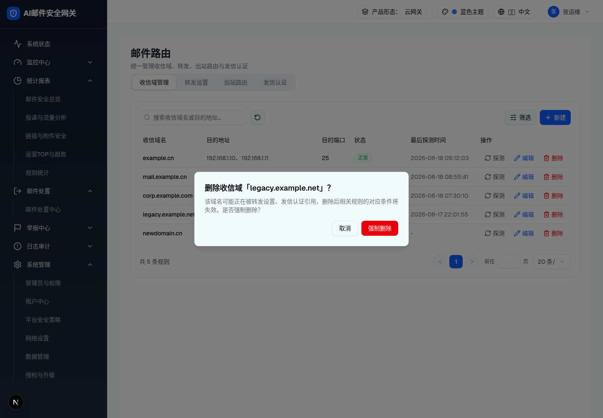
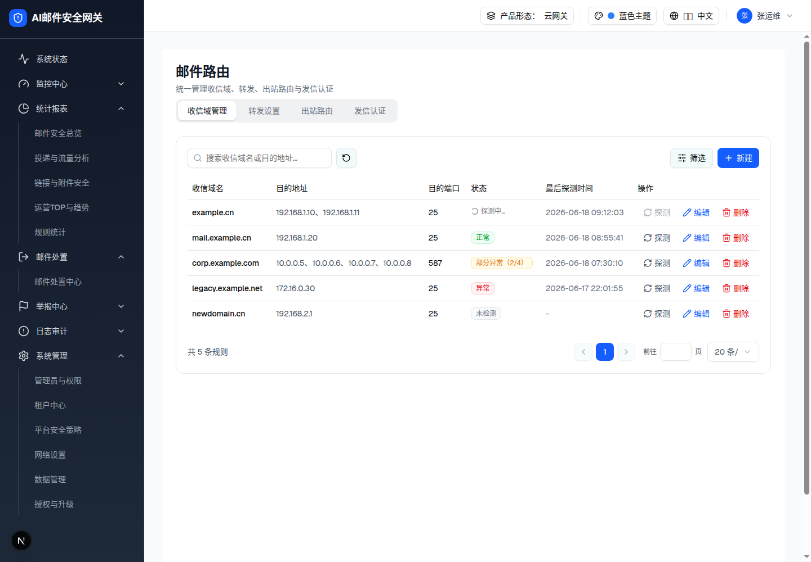
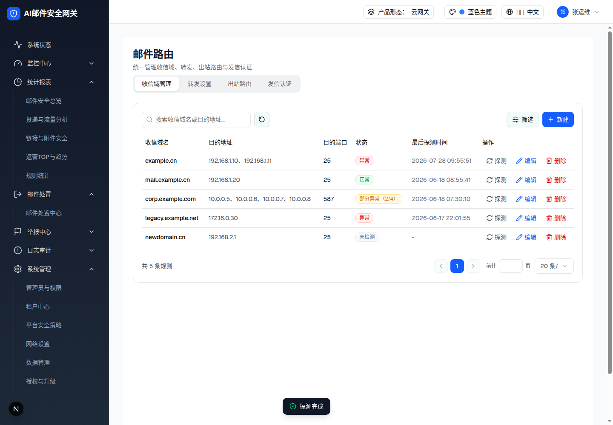

| 所属组件 | 2.3 收信域管理 Tab |
| 触发路径 | 层级0 行内「删除」（实测第 4 行 legacy.example.net）→ 居中 AlertDialog + 遮罩；行内「探测」→ 状态列 1s「探测中…」→ 随机结果 + Toast |
预览可操作：「取消」/「强制删除」→ Toast「收信域已删除」（demo 同时移除该行）。注意按钮文案是「强制删除」而非「确认删除」——正文声明被引用规则将失效，但删除不做引用拦截。
该域名可能正在被转发设置、发信认证引用，删除后相关规则的对应条件将失效。是否强制删除？

| 元素 | 规格（浏览器实测） |
|---|---|
| 标题 | 「删除收信域「域名」？」（动态插入） |
| 正文 | 提示被转发设置/发信认证引用的连带失效风险；无引用计数/清单（落地建议列出实际引用数） |
| 按钮 | 「取消」outline / 「强制删除」红底 bg-red-600 hover:bg-red-700；确认后行移除 + Toast，无撤销 |
| 关闭方式 | 取消 / 强制删除 / Esc；遮罩点击关闭 |
| 比对项 | demo 实际 DOM | 嵌入的 HTML | 是否一致 |
|---|---|---|---|
| 根节点 | [role=alertdialog][data-state=open]（居中 max-w-lg） | 同（规格侧中和 fixed 居中） | 一致 |
| 标题动态名 | 「legacy.example.net」 | 同 | 一致 |
| 确认按钮 | 「强制删除」红底 | 同 | 一致 |
| 节点数 | 7 | 7 | 一致 |
探测为行级互斥（probingId 单值）：探测中该行「探测」按钮禁用，状态列替换为 Loader2 旋转 + 「探测中…」；1s 后随机落定 正常(40%)/部分异常(30%)/异常(30%)，部分异常时 abnormalCount=⌈主机数/2⌉，刷新最后探测时间为当前时刻，Toast「探测完成」。


| 比对项 | demo 实际 DOM | 嵌入的 HTML（主文件 §2.7） | 是否一致 |
|---|---|---|---|
| 根节点 | div[role=status][aria-live=polite]，class 含 bg-gray-900 text-white + opacity-100（显示态） | 同 | 一致 |
| 图标 + 文案 | CheckCircle2（text-green-400）+「探测完成」 | 同 | 一致 |
| 节点数 | 4 | 4 | 一致 |